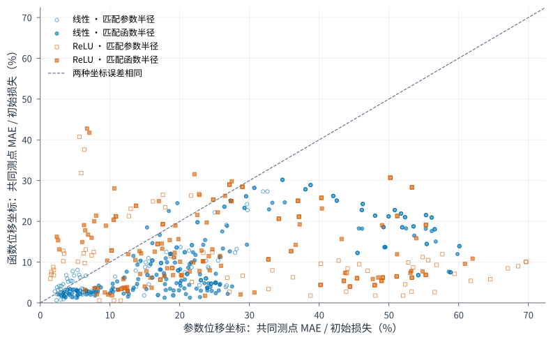
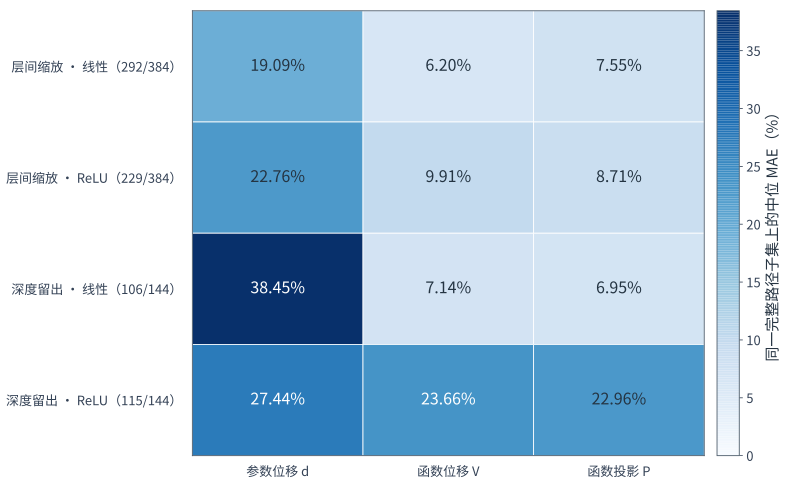
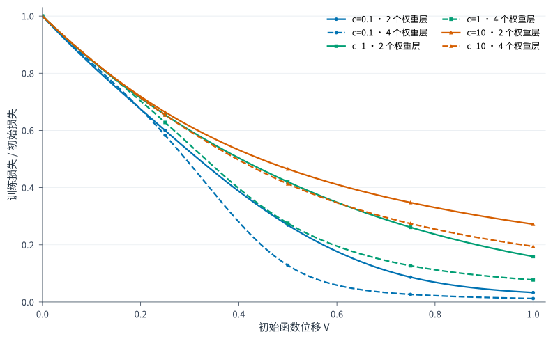

D15 相关实验：保持初始函数的层间尺度变换
2026-11-08 · 参数化干预的边界检验 · 不作为 D1 原定义 U 的实验
结论
函数位移比参数位移更能跨层间尺度迁移，但还不是统一训练时间。在本轮无 bias、全批量合成回归中，函数尺度在 507/591（85.79%）条合格配对上更准；两套学习率规则分别为 236/291（81.10%）和 271/300（90.33%）。这里检验的是相对改善，不能解释为 85.79% 的曲线已重合。
精确迁移仍失败：系数仅在两权重层的平衡初始化上拟合，迁移到四权重层后，V 完整覆盖 267/288（92.71%）条确认路径；这些完整路径的中位 MAE 为初始损失的 12.88%，未通过预设 ≤1% 的精度门槛。全部 5,184 条候选路径均为有限数值，不能把失败归为数值发散。
Formulation：这轮改变什么
两层学生写为 $f(x)=W_2\phi(W_1x)$。当 $\phi$ 是恒等或 ReLU，且 $c>0$ 时，$W_1\mapsto cW_1$、$W_2\mapsto W_2/c$ 保持初始函数不变。另插入两个可训练的恒等线性因子，把权重层数从 2 改为 4，仍保持初始函数。本轮实际核对的训练／验证预测最大差分别为 $1.11\times10^{-16}$、$1.39\times10^{-16}$。
令 $r_0=f_0-y$，$J_0=\partial f/\partial\theta|_{\theta_0}$，$\delta^c(t)$ 为每步都向优化器输入同一个初始梯度时的累计位移。比较三个初始化代理：
$$d(t)=\frac{\|\delta^c(t)\|}{\|\theta_0\|},\qquad V(t)=\frac{\|J_0\delta^c(t)\|}{\|r_0\|},\qquad P(t)=-\frac{r_0^T J_0\delta^c(t)}{\|r_0\|^2}.$$
V 是本轮新检验的函数尺度，区别于旧 D1 的参数长度 U，不能直接改名为原来的 U。每个坐标各用同样两个非负系数拟合 SGD 参考时间 $\hat\tau=A z+B z^2$，$z\in\{d,V,P\}$；读取参考损失得到预测。只用平衡、两层、两个预定初始化的 384 条路径拟合，确认路径不参与拟合。
为什么可以期待改善，却不能先保证重合？
参数长度受层间尺度影响；J₀δ 把参数移动换算为预测变化，因而是更贴近任务的候选。但同一初始函数不固定初始核 $K_0=J_0J_0^T$。全批量平方损失梯度流瞬时满足 $\dot f=-K_t r/n$，核的谱形、训练中的核变化以及优化器记忆，都可能改变各残差方向的速度。
沿同一条函数轨迹运动、只差速度，是期待时间统一的一种充分结构；仅要求损失相同，则不必要求函数轨迹相同。当前的 V 仅用初始化，并未证明这些方法满足可由它统一的动力学关系。重新参数化后梯度和冻结位移会重算，V 也不自动具有坐标不变性。线性化损失恒等式 $L_{lin}/L_0=1-2P+V^2$ 只对线性化模型成立，不是实际网络的全程预测定理。推导、条件与原文来源
成立程度
主配对分母为 768 条层间重平衡的自适应确认路径。591 条满足真实损失进度 ≥10%、d/V 共同参考覆盖 ≥80%；另外 6 条进度不足、171 条共同覆盖不足。改善容差为 10⁻¹⁰。另只看 d/V 均整条覆盖的路径，两套规则仍分别有 219/272 和 257/285 条改善。
| 坐标 | 完整参考覆盖 | 完整路径的中位 MAE | 覆盖内最坏单点误差 |
|---|---|---|---|
| 参数位移 d | 630/768 | 23.46% | 97.95% |
| 函数位移 V | 688/768 | 10.37% | 80.76% |
| 下降投影 P | 634/768 | 9.09% | 72.05% |
表格保留各坐标自己的覆盖分母，不能直接按其中位数排名。图 1 使用共同测点，图 2 使用共同完整路径。MAE 为固定 0–256 步的平均绝对损失差除以 L₀，再在路径间取中位数；最坏单点单独报告，避免平均误差掩盖偏离。



方法与 setting
展开完整实验设置与评价规则
数据：输入维数 8，训练 64、独立验证 256；高斯输入，协方差条件数 1/10；线性／单隐层 ReLU 教师，无标签噪声。目标按训练集 RMS 缩放，不居中。学生无 bias，隐藏宽度 8/32，激活恒等／ReLU；两层基模型，四层结构只插入两个 Identity 激活的线性因子，不额外加入 ReLU。全部权重可训练，c=0.1/1/10。
设计：核心两层网格 4,608 条路径，四层留出结构 576 条，共 5,184；其中三种自适应优化器的层间尺度确认 768 条、深度确认 288 条。SGD 参考 64 条。训练种子 8101/8102 用于预定标定，8201/8202 确认；种子只检验重复性，深度留出才是结构迁移。设置中的相关配对和 AdamW 一致性控制不算独立任务。
优化：SGD、Momentum、Adam、AdamW、RMSprop、Adagrad；动量 μ=0.9，Adam 的 β₁=0.9、β₂=0.999，RMSprop 的 α=0.99，eps=10⁻⁸ 位于平方根外，Adagrad 累加器初值 0；所有方法 weight decay=0，AdamW 因而是 Adam 的一致性控制。float64，单线程 CPU，全批量；候选 256 步、参考 2,048 步。逐项状态及全部设置见执行前冻结的协议。每一步保存实际损失、验证损失和冻结代理。
学习率：两套规则分别让预计 d 或 V 在第 256 步达到半径 0.25/1；所有方法再统一限制初始单步 V≤0.02。受限时记录实际学习率及实际预计半径，不再声称达到原匹配半径。尺度确认有 336/768 条触发上限；深度确认有 192/288 条触发。四层只用函数匹配、半径 1，这也是外推范围的一项限制。
拟合：按教师、输入条件数、激活、宽度分成 16 组；每组只用 c=1、两层、8101/8102 的 Adam/RMSprop/Adagrad 曲线，两套学习率和两半径合并，每条轨迹等权。d/V/P 均各拟合 A、B 两个系数。时间单位是参考 SGD 学习率×步数，不混用不同学习率的原始步数。
窗口与缺失：全部 257 个测点固定；不根据确认损失裁剪。超出参考时间保持缺失，不夹回末端。首次／持续阈值及模型类不可达的阈值另存；类别不可达不是优化器慢。线性学生的可达地板用最小二乘独立计算。验证集仅作诊断，不参与拟合或选学习率。
失败与限制
函数尺度只改善了一部分参数化敏感性。深度留出没有达到 1% 精度；ReLU 与恒等学生也有明显差别。初始化线性化预测在尺度确认中的中位 MAE 虽为 2.52%，平均却达 52.40%，最坏点达 2,381.55%，说明少数严重失配不能忽略。核差异提供解释线索，但当前学习率规则也随参数化改变，不能把全部轨迹差异因果归于核。
未决
两轮已完成；真实小批量、新数据与重复数据、交叉熵及 GRU 的迁移仍未执行。下一轮需要先锁定一个问题和预测规则，再检验整个留出任务族。当前结果足以反对“这些优化器理应重合”，尚不足以建立通用 U。
证据
预注册 commit 87a6839 早于计算。数值摘要 · 独立复算记录 · 重现入口。原始逐步产物保留在执行时的归档路径 AIQ_KB_DATA/runs/d1_scaling_exploration_20261107/r002_parameterization/。
176,619 项核验无失败：核对全部产物哈希、5,184 条路径的初末关系、全部三坐标评分、46,656 个阈值记录，并独立重拟合 48 组系数。实际训练的独立 PyTorch 逐步复算覆盖明确指定的 8 条完整路径，不宣称重新训练全部路径；另有执行前 48 条短路径的优化器微测试。